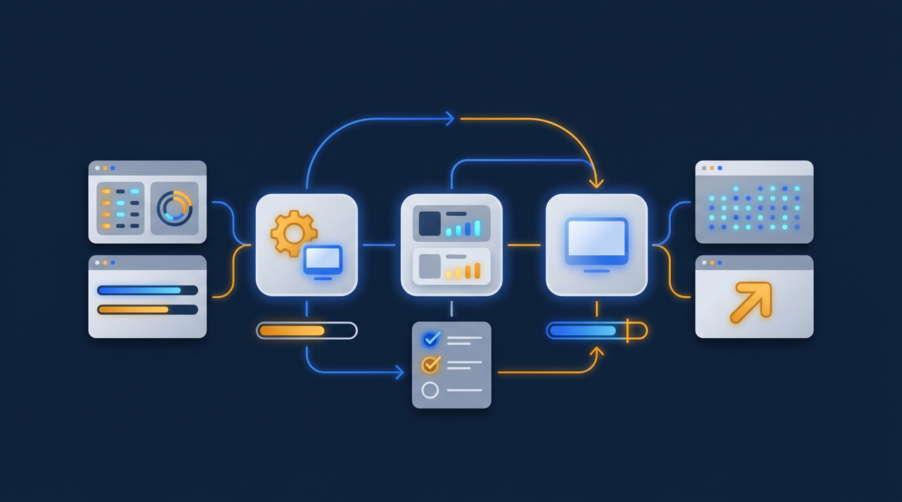
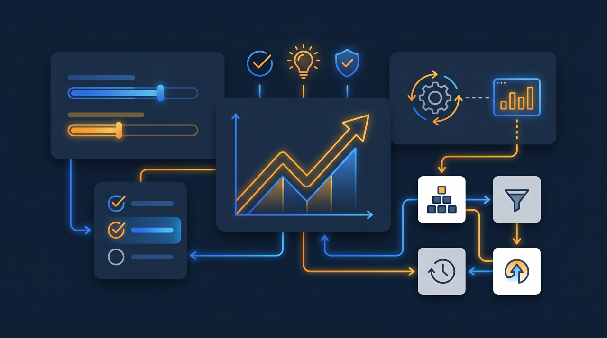
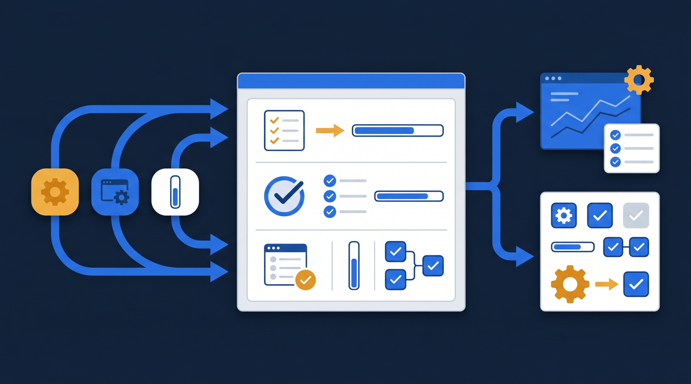

「研修はやりました。でも、本当に分かってもらえたのかは……正直、自信がないんです」——研修を実施した担当者から、こんな本音をよく聞きます。受講したという事実は記録に残っても、理解したかどうかは見えにくい。この記事では、研修の理解度測定とは何かを整理しつつ、確認テストを使って学習効果を把握する方法と、合格基準や再受講の設計のポイントを、現場目線でお話しします。

研修の理解度測定とは？「受けた」と「分かった」は違う
研修の理解度測定とは、研修を受けた人がその内容をどの程度理解できたかを確かめる取り組みのことです。ここで押さえておきたいのは、「受講した」と「理解した」はまったく別だということです。動画を最後まで再生しても、内容が頭に入っているとは限りません。受講の記録だけを見ていると、この差を見逃してしまうんですよね。
考えてみれば当然のことで、人は集中が途切れることもあれば、説明が難しくて分からないまま流してしまうこともあります。研修を配って、再生されたことを確認して、それで「教育は完了した」と判断してしまうと、実は半分の人が理解していなかった、という事態が後から表に出てくる。理解度測定は、この「受けた」と「分かった」のあいだのずれを見える形にする取り組みだと言えます。
厚生労働省の能力開発基本調査でも、教育訓練の実施状況とあわせて、その効果をどう把握するかは継続的なテーマになっています。研修にかけた時間や費用が成果につながったかを確かめるには、受講の有無だけでなく、理解の度合いまで見る必要がある。理解度測定は、研修を「やりっぱなし」にしないための、確かめの仕組みなんです。
なぜ理解度を測る必要があるのか
「テストまでやるのは大げさでは」と感じる方もいます。けれど、理解度を測らないままだと、いくつかの問題が見えないまま進んでしまうことが多いんです。
1. 効果のない研修に時間と費用をかけ続けてしまう
理解度を測らないと、研修が効いているのかが分かりません。効果のない研修でも、受講さえされていれば「やっている」状態は続きます。来年も同じ内容を、同じやり方で。理解度という物差しがないと、見直すきっかけそのものが生まれないわけです。
2. 理解が浅いまま現場に出てしまう
特に安全や品質に関わる研修では、理解が浅いまま現場に出ることが、事故やトラブルにつながることがあります。受講の記録上は「教育済み」でも、実際には肝心なところが分かっていない。理解度を確かめておけば、現場に出る前に取りこぼしを補えます。
3. 教材のどこを直すべきか分からない
理解度を測ると、どこでつまずいているかが見えてきます。逆に測っていないと、教材のどこが分かりにくいのかが分からず、改善の手がかりが得られません。多くの人が同じところでつまずいているなら、そこを直せば研修全体が良くなるのに、その情報が得られないわけです。

確認テストで理解度を測る——基本の考え方
理解度を測る手段として、最も取り入れやすいのが確認テストです。研修動画や資料を学んだあとに、要点を問う問題に答えてもらう。その正答の状況から、理解の度合いを把握します。
ここで大切なのが、確認テストは「ふるいにかける」ためのものではない、ということです。難しい問題で受講者を落とすことが目的ではなく、その研修で伝えたかった要点が伝わっているかを確かめるのが目的です。だから問題は、研修で押さえてほしい内容に沿って作ります。研修では触れていない応用問題を出すと、理解の確認ではなく別物の試験になってしまいますよね。
ある製造業の会社では、機械の操作手順を動画で学んだあとに、確認テストを設けていました。テストの問題は、動画で繰り返し強調した「電源を切ってから清掃する」「異音がしたら止める」といった要点に沿ったものです。すると、動画を見ただけでは流していた人も、テストがあることで要点を意識して見るようになった。確認テストには、理解を測るだけでなく、受講者の見方を要点に向けさせる効果もあるんです。
このとき、テストの問題数や形式も、目的に合わせて考えたいところです。要点を確かめるのが目的なら、設問はその研修で押さえてほしい数に絞れば十分で、やみくもに数を増やす必要はありません。形式も、選択式で答えやすくするか、記述で考えを書いてもらうかは、何を確かめたいかによります。手順を正しく覚えているかを見たいなら選択式が向きますし、自分の言葉で説明できるかを見たいなら記述が向く。テストの作り方そのものが、その研修で何を理解してほしいのかを映す鏡になる、と考えると設計しやすくなります。難しさで悩むより、まず「この研修で一番伝えたい要点は何か」をはっきりさせると、自然と問うべきことが見えてくるんですよね。
- 研修で押さえてほしい要点に沿った問題にする
- 難易度を上げることより、要点が測れることを優先する
- 受講の直後に受けられるようにし、学んだ内容を確かめる
- つまずいた箇所が分かるよう、要点ごとに問いを分ける
- 合格・不合格だけでなく、どこを間違えたかを記録する
合格基準と再受講の設計
確認テストを設けると、次に決めることになるのが、何点で合格とするか、合格できなかった人にどう対応するか、という設計です。ここをきちんと決めておかないと、テストが形だけになってしまいます。
合格基準は、研修の目的から逆算して決めるのが現実的です。安全教育や法令に関する研修のように、確実に理解してほしい内容では、基準を高めに設定します。一方、知識の幅を広げることが目的の研修なら、基準を緩めにしても構いません。どのテストも同じ「80点」と決めるより、その研修で求める理解の水準に合わせて調整するほうが、納得感が出ます。
そして、合格できなかった人への対応です。ここで大切なのは、不合格を「責める材料」にしないことです。テストに通らなかったということは、その箇所がまだ理解できていないということ。だから、つまずいた箇所をもう一度学び直し、再受講してから再びテストを受けられるようにする。この再受講の流れがあると、理解の取りこぼしを防げます。不合格は終点ではなく、学び直しの入り口だと位置づけると、受講者も前向きに取り組みやすくなります。再受講の回数に上限を設けず、合格するまで何度でも挑戦できるようにしておくと、受講者は安心して取り組めますし、結果として全員が一定の理解に達した状態をつくりやすくなります。
ところで、再受講をスムーズにするには、どこを間違えたかが分かることが大切です。総合点だけ伝えられても、どこを学び直せばいいか分かりません。要点ごとに問いを分けておけば、「ここの理解が足りなかった」と分かり、その章だけを見返せばよくなる。再受講の負担も軽くなるわけですね。
学習管理システムで理解度を「見える化」する

確認テストを紙やExcelで運用することもできますが、対象者が増えると、採点と集計の手間が一気に重くなります。誰が何点だったかを手で集計し、不合格者を探して再受講を案内する。これを研修ごとに繰り返すのは、相当な負担です。
学習管理システム（LMS）を使うと、この流れを仕組みに乗せられます。受講者がテストに答えると自動で採点され、合格・不合格がその場で判定される。担当者が一人ずつ採点する必要がありません。そして、誰が合格し、誰がどの問題でつまずいたかが、データとして残ります。
この記録があると、理解度を「見える化」できます。受講率だけでなく、合格率や、よく間違えられる問題まで見えるので、研修が効いているかを数字で確かめられる。たとえば、特定の問題の正答率が極端に低いなら、その箇所は教材の説明が足りない可能性がある、と判断できます。受講者の理解度が、教材を直すヒントになるわけです。J-Net21などの中小企業向け情報でも、教育の効果をどう把握し改善につなげるかは繰り返し取り上げられていますが、確認テストの結果を見える化することは、その実践的な第一歩になります。
そしてもう一つ、テストの記録は時間とともに価値が増していきます。今年の合格率を去年と比べれば、研修が改善されたかどうかが見えてきます。理解度の測定は、その場の確認にとどまらず、研修を年々良くしていく土台にもなるんです。
加えて、理解度の測定は、受講者本人にとっての学びにもなります。テストを受けて、どこを間違えたかが分かると、自分が何を理解できていないのかに気づけます。動画を見ているだけでは「分かったつもり」になりやすいものですが、問いに答えてみて初めて、あいまいだった部分がはっきりする。確認テストは、評価のためだけでなく、受講者自身が理解を深めるための機会でもあるんですね。そう考えると、テストを設けること自体が研修の一部だと言えます。見て終わりにせず、問いに向き合う時間を組み込むことで、学んだ内容が記憶に定着しやすくなる。理解度を測る取り組みは、測ると同時に、理解そのものを後押ししているわけです。
理解度測定を始めるときの注意点
理解度測定は研修の効果を高めてくれますが、進め方を誤ると、受講者の負担を増やすだけになることがあります。最後に、気をつけたい点を挙げておきます。
まず、テストを目的にしないこと。確認テストはあくまで理解を確かめる手段であって、テストで高得点を取ること自体が目的ではありません。問題を難しくしすぎたり、暗記偏重の問題にしたりすると、受講者は「テストのための勉強」に走り、肝心の理解がおろそかになります。要点が身についているかを測る、という本来の目的を見失わないことが大切です。
次に、結果で人を追い詰めないこと。理解度を見える化すると、誰ができていないかが分かります。それを過度に責める材料にすると、受講者は萎縮し、形だけ合格を取りに行くようになりかねません。理解度の測定は、つまずいている人を支援するための材料だと位置づけ、再受講の機会をきちんと用意することとセットで考えたいところです。
そして、測った結果を改善に活かすこと。理解度を測っただけで終わらせず、つまずきの多い箇所を教材に反映する。測定と改善がつながって初めて、研修は回を重ねるごとに良くなっていきます。なお、確認テストの受験・合格の記録は、人材開発支援助成金のように訓練の実施状況を示す記録が求められることがある制度を活用する際にも、研修が受けられただけでなく一定の理解に至ったことを示す資料として役立つ場合があります。
まとめ：「受けた」を「分かった」に変える確かめの仕組み
研修の理解度測定とは、研修を受けた人がその内容をどの程度理解できたかを確かめる取り組みです。「受講した」と「理解した」は別物であり、受講の記録だけを見ていると、理解できていない人を見逃してしまいます。理解度を測ることで、効果のない研修を見直し、理解が浅いまま現場に出ることを防ぎ、教材のどこを直すべきかが見えてきます。
手段として取り入れやすいのが確認テストです。研修の要点に沿った問題を作り、目的に応じた合格基準を設け、合格できなかった人には学び直しと再受講の機会を用意する。不合格を責める材料ではなく、学び直しの入り口と位置づけることが、受講者の前向きな取り組みにつながります。
確認テストの結果は、学習管理システム（LMS）で見える化すると、採点や集計の手間をかけずに、合格率やつまずきの多い箇所まで把握できます。測った結果を教材の改善に活かしていけば、研修は年々良くなっていきます。まずは、効果を確かめたい研修を一つ選び、その要点に沿った確認テストを作るところから始めてみてください。
よくある質問
研修を受けた人が、その内容をどの程度理解できたかを確かめる取り組みのことです。受講したかどうかだけでなく、確認テストなどを通じて理解の度合いを把握することで、研修が実際に効果を上げているかを判断しやすくなります。
難易度を上げること自体が目的ではありません。確認テストは、研修で伝えたかった要点が理解できているかを確かめるためのものなので、その研修で押さえてほしい内容に沿った問題にするのが基本です。難しすぎると受講者が意欲を失い、易しすぎると理解の確認になりにくいため、要点を測れる水準に整えるとよいでしょう。
研修の目的によりますが、安全や法令のように確実に理解してほしい内容では基準を高めに、知識の幅を広げる目的なら緩めに、というように、内容に応じて調整するのが現実的です。どの研修も同じ基準で決めるより、その研修で求める理解の水準から逆算して設定すると納得感が出やすくなります。
合格できなかった箇所をもう一度学び直し、再受講してから再びテストを受けられるようにすると、理解の取りこぼしを防ぎやすくなります。不合格を責める材料にするのではなく、つまずいた箇所を補うための仕組みとして設計すると、受講者も前向きに取り組みやすくなります。
使えます。多くの受講者が同じ問題でつまずいているなら、その箇所は教材の説明が不足している可能性があります。テストの結果は受講者の理解を測るだけでなく、どこを直せば研修が良くなるかを示すヒントにもなります。
人材開発支援助成金などの制度では、訓練の実施状況を示す記録が求められることがあります。確認テストの受験・合格の記録が残っていると、研修が受けられただけでなく一定の理解に至ったことを示す資料として整理しやすくなる場合があります。要件は制度や年度で変わることがあるため、詳細は公式情報での確認をおすすめします。